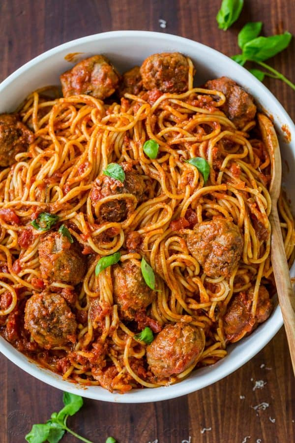

Spaghetti and meatballs

Description
Spaghetti and Meatballs in homemade marinara sauce. These are amazing “WOW”-inducing MEATBALLS – so tasty and juicy and BIG! We’re sharing all of our secrets for incredibly tender and flavorful meatballs.
The secret to getting uber tender meatballs is bread; yes, bread. And the secret to getting uber flavorful meatballs is in the combination of meats – I’m talking about lean ground beef with sweet Italian sausage.
Ingredients
- White bread is best but you can use whole wheat or other soft sliced bread
- Use lean ground beef – 7% to 15% fat content
- If you aren’t able to find Italian sausage meat only, use sausages and remove casings
- Use freshly grated parmesan or finely shredded pre-packaged
- Do not skimp on the garlic in the meatballs or the sauce
Steps for making Meatballs
- Combine diced crustless bread pieces with 2/3 cup water and set aside for 5 minutes then mash together with a fork.
- In a large mixing bowl (I use my KitchenAid mixer to do the work), add: 1 lb ground beef, 1 lb sausage, 1/4 cup parmesan cheese, 4 minced garlic cloves, 1 tsp salt, 1/2 tsp black pepper, 1 egg and the mashed moist bread crumbs. Mix until well combined.
- Form into 1 1/2″ meatballs (about a flat ice cream scoop’s worth of meat). Dredge/roll meatballs in flour. Heat a deep, large, heavy skillet or a Dutch oven over medium heat with about 3 Tbsp oil. Add meatballs in batches so you don’t crowd the pan and saute until browned on all sides (6 min total or 2 min per side). Remove meatballs to a separate dish and set aside (don’t worry about cooking through at this point).